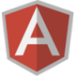

Junior Web Developer



I've always been involved in technology throughout my career, working within the post-production and broadcasting industries. In 2016 I diversed into Web Development and attended a bootcamp course which gave me a great insight into how to build websites. I moved into Web Development as it provides me with a creativity, challenge and feeds my regular curiosity into researching new technologies. I really enjoy the variety of work and there's always something new to learn.
If I'm not working with code I love travelling particulary to slightly more unusual places like Iceland and Cuba which I have recently visited. I also have a big interest in films, I am regularly at the cinema and especially enjoy films by Wes Anderson and Paul Thomas Anderson.
DX2: Junior Web Developer - February 2017 - present
I'm currently working here in Northampton. Since I have been working at DX2 I'm regularly working on a variety of projects involving client websites and web applications for companies internal use. The company has been a great platform for me to learn and improve my skills. Most of my work involves using HTML, CSS, JavaScript, jQuery, Wordpress, Adobe Photoshop and SEO.
General Assembly: Web Development Immersive - June 2016 - September 2016
This was a 3 month immersive bootcamp course in web development. The course provided me with programming fundamentals and experience in pair programming. Working with different softwares and processes on both the front-end and back-end of development gave me an understanding of how to think and approach problems. The portfolio projects below represent the four projects completed on the course, three of which were done individually and one as a group.
VocaLink: Internship - Project Manager - July 2011 - February 2012
I managed a desktop / mobile application project for this Financial company from initial conceptual ideas to a branded application ready to be developed, working within it's digital marketing team. The application was a sort code finder which could be used on both the Web and Mobile. This project was as an internship for the dissertation of my MSc Electronic Publishing.
Is a JavaScript trivia game, using HTML, CSS, Vanilla JavaScript, Git and Heroku.
This is a game which tests your knowledge of TV theme tunes. You have eight questions to answer and have ten seconds each to guess the correct TV show. There are three options available and the user then chooses which option from the associated TV theme soundtrack being played.
Codethis is a full stack app using Ruby on Rails, Device for authentication, MVC, RESTful Services, Active Record, Insomnia, Bootstrap, MongoDB, Git and Heroku.
As curry is my favourite food, I liked the idea of creating a recipe app which displays and shares the different types of curry recipes available. If a user registers they can display, edit, create and delete their own recipes and also create comments. If a user is unregistered they can only view recipes.
CodeGroup project is a full stack app. Using Object-Oriented Programming in JavaScript, Express.js, Node.js, API's using Google Maps, Google Maps Places, Google Maps Directions, BCrypt for authentication, Insomnia, jQuery, Bootstrap, MongoDB, Git, Amazon Web Services and Heroku.
This app is for people arranging a meetup and need an approximate midway point to each other for a social occassion. The idea came from our own personal experiences where it can be awkward deciding where to meetup when you are in different locations for example in London.
Codeis a full stack MEAN app. Using Bootstrap, Bower, Mongoose, BCrypt, Insomnia, Vanilla Javascript, API's using Google Maps and Google Maps Places, MVC, CRUD, Git and Heroku.
This is a dog friendly app for dog owners who need to find out where potentially they would be able to take their dog for example in restaurants, pubs and beaches. The app provides reviews where users can create, edit, display and delete their own reviews on dog-friendly locations. Using Google Maps API this also displays the locations of the reviews on the site.
CodePlease feel free if you wish to get in touch, have any questions and queries.
Thanks for visiting!


Copyright © ChristianCasey 2017